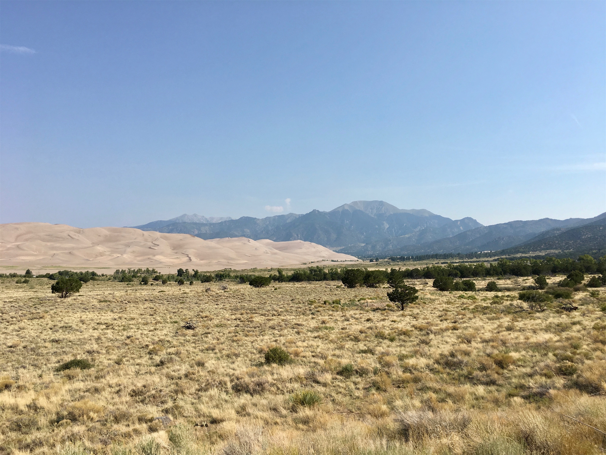
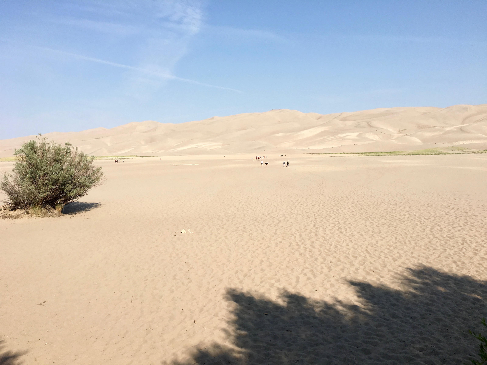
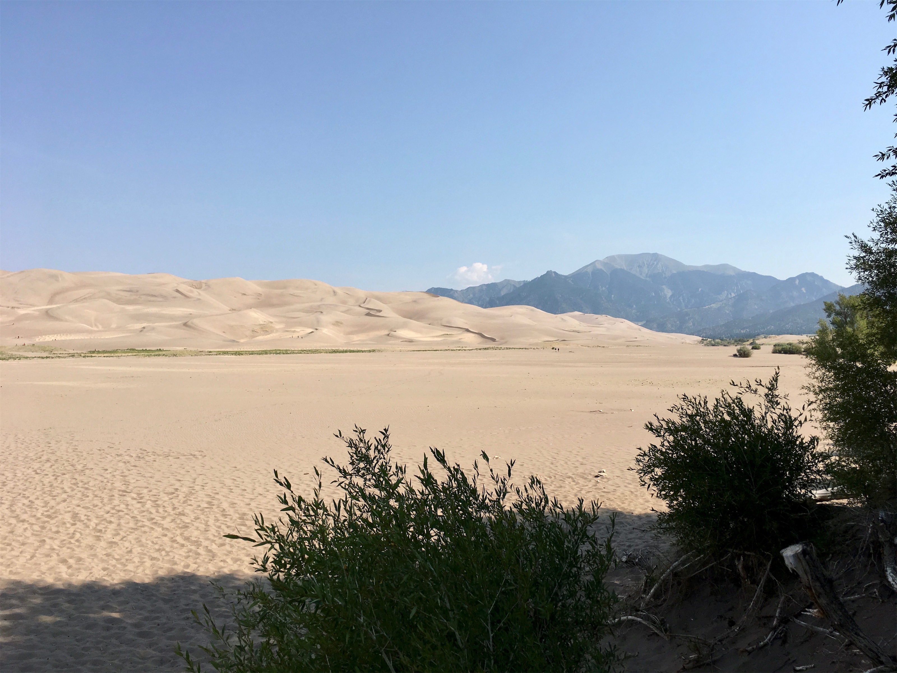

Thursday, Aug 2, 2018, 9:05 AM MDT
Great Sand Dunes National Park & Preserve, Mosca, CO, United States
64°F Sunny
64°F Sunny
![]()
7/31 South Rim Visitor Center, CO -> Montrose, CO 33 mi, 0.5 hr
8/1 Montrose, CO -> Mosca, CO 197 mi, 4.5 hr
8/2 Mosca, CO -> Great Sand Dunes Visitor Center, CO 4 mi, 0.25 hr
Trip Toal: 10,319 mi
While in the Black Canyon of the Gunnison park, a loud screech came from one of the wheels. Brad thought it was a stone caught against the rotor, and it went away after a while, but it later returned. Fortunately, our overnight stay was in nearby Montrose, right on auto repair row. After trying four places, we found one that would look at the car in the morning. The problem was just some rusty junk caught in the brake pad, but since both the brakes and tires were getting pretty worn, we had them replaced, and we were back on the road around noon.
We headed southeast through desert and mountains, crossing the Continental Divide, and finally drove through the San Luis Valley, almost near the New Mexico border. This place is really remote. After an overnight stay right outside of the park, the next morning we drove to the Great Sand Dunes, which is the tallest in the continent, reaching up to 750 feet high. It is a very popular spot with kids to do sand boarding, but going down is much more fun than trudging back up. It was pretty busy in the early morning, because the sand can reach up to 140 degrees in the afternoon. The Sangre de Cristo mountains were obscured by yet more wildfire haze, this time coming from California. A combination of these mountains, the prevailing winds, and plentiful sand from the valley combine to form this unique sight, which we observed from the visitor center and the recreation parking lot. The people look like ants on this giant feature.


